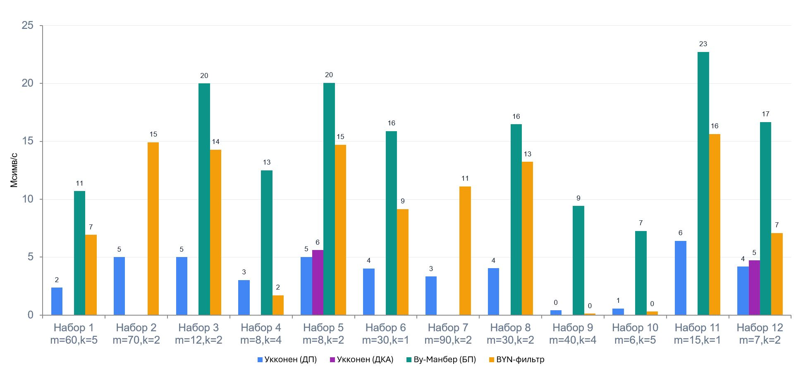

Сравнительный анализ алгоритмов нечёткого поиска подстроки в строке
Введение
Задача поиска подстроки занимает центральное место в информатике. Алгоритмы точного поиска работают за линейное время, однако принципиально ограничены требованием точного совпадения. В реальных приложениях – проверка орфографии, биоинформатика, системы информационного поиска, обнаружение плагиата – неизбежно встречаются опечатки, мутации, синонимы и другие отклонения. Это делает нечёткий поиск, допускающий редакционные ошибки, практически неотъемлемым компонентом современных текстовых систем.
С момента постановки задачи Селлерсом было предложено несколько принципиально различных подходов. Алгоритмы на основе динамического программирования универсальны, но работают за O(mn) в худшем случае. Автоматные методы обеспечивают теоретически оптимальную сложность O(n) за счёт дорогостоящей предобработки. Алгоритмы с битовым параллелизмом используют аппаратные возможности современных процессоров. Фильтрующие алгоритмы достигают сублинейного среднего времени, отсеивая большинство позиций текста без верификации.
Настоящий курсовой проект посвящён сравнительному экспериментальному анализу четырёх представительных алгоритмов нечёткого поиска: алгоритма Укконена на основе динамического программирования, алгоритма Укконена на основе детерминированного конечного автомата, алгоритма Ву-Манбера с битовым параллелизмом и фильтрующего алгоритма Баеза-Ятеса-Наварро.
Выбор алгоритмов для сравнительного анализа
Для обеспечения репрезентативности были отобраны по одному алгоритму из каждого класса:
- Укконен (ДП) – классическое динамическое программирование с эвристикой отсечения. Прост в реализации, служит верификационным компонентом в фильтрах.
- Укконен (автомат) – детерминированный конечный автомат, построенный по нечёткому НКА. Обеспечивает поиск за O(n) после предобработки.
- Ву-Манбер – битово-параллельная симуляция НКА с использованием побитовых операций. Высокая скорость при длине образца <= 64 символа.
- Баеза-Ятеса-Наварро (BYN) – фильтрационный алгоритм на основе разбиения образца и иерархической верификации. Сублинеен при малом уровне ошибок.
Выбранные алгоритмы покрывают все четыре принципиальных подхода, что позволяет провести объективное сравнение.
Тестовые наборы данных
Для всестороннего анализа были разработаны 12 тестовых наборов, охватывающих нормальные, экстремальные и деградационные режимы. Ниже приведена сводная таблица.
| № | Назначение | Параметры | Работающие алгоритмы |
|---|---|---|---|
| 1 | Стресс-тест: обилие частичных совпадений | m=60, k=5, n=108 | ДП, ВМ, BYN |
| 2 | Отказ Ву-Манбера | m=70, k=2, n=107 | ДП, BYN |
| 3 | Отказ автомата по длине образца | m=12, k=2, n=106 | ДП, ВМ, BYN |
| 4 | Отказ автомата по числу ошибок | m=8, k=4, n=106 | ДП, ВМ, BYN |
| 5 | Конкурентная ниша автоматного алгоритма | m=8, k=2, n=108 | Все четыре |
| 6 | Оптимальные условия для битового параллелизма | m=30, k=1, n=108 | ДП, ВМ, BYN |
| 7 | Идеальные условия для фильтрации | m=90, k=2, n=108 | ДП, BYN |
| 8 | Сбалансированный тест | m=30, k=2, n=108 | ДП, ВМ, BYN |
| 9 | Деградация динамического программирования | m=40, k=4, n=108 | ДП, ВМ, BYN |
| 10 | Лавина кандидатов при фильтрации | m=6, k=5, n=108 | ДП, ВМ, BYN |
| 11 | Отсутствие вхождений | m=15, k=1, n=108 | ДП, ВМ, BYN |
| 12 | Реальный тест на естественном языке | m=7, k=2, n=108 | Все четыре |
Обсуждение результатов

Эксперименты показали, что алгоритм Ву-Манбера доминирует в 10 из 12 наборов с пропускной способностью 7.3–22.6 Мсимв/с. Он стабилен при любом уровне ошибок, не требует предобработки и имеет низкий разброс времени.
BYN-фильтр эффективен только в узком диапазоне.
Укконен (ДП) – надёжный базовый алгоритм, работающий при любых параметрах. Его пропускная способность в нормальных условиях составляет 4.0–6.4 Мсимв/с, что в 3–4 раза ниже Ву-Манбера. При плотных близких совпадениях реальная сложность приближается к O(mn), что приводит к сильной деградации.
Укконен (автомат) не оправдал теоретических ожиданий: несмотря на O(n) поиск после предобработки, его пропускная способность (4.71–5.61 Мсимв/с) лишь на 12–13 % выше ДП и в 3.5 раза ниже Ву-Манбера. Причина – большой вес одного табличного перехода по сравнению с узким ДП-столбцом при малых k.
Выводы
- Алгоритм Ву-Манбера является оптимальным выбором для большинства практических задач при m <= 64. Он лидирует в 10 из 12 наборов с пропускной способностью 7.3–22.6 Мсимв/с, демонстрирует высокую стабильность и не чувствителен к статистике текста.
- BYN-фильтр эффективен лишь в узком диапазоне (длинный образец, малый уровень ошибок, богатый алфавит). При выходе за эти границы деградирует катастрофически – до 0.13 Мсимв/с.
- Укконен (ДП) – надёжный, но медленный базовый алгоритм, применим при любых параметрах. Его пропускная способность в нормальных условиях в 3–4 раза ниже Ву-Манбера, а при плотных близких совпадениях сложность приближается к O(mn).
- Автоматный алгоритм оказался менее конкурентоспособным, чем предполагалось теоретически.
- Теоретические гипотезы подтверждены частично: доминирование ВМ при m <= 64 – полностью; сублинейное поведение фильтра – только при нулевом числе кандидатов.